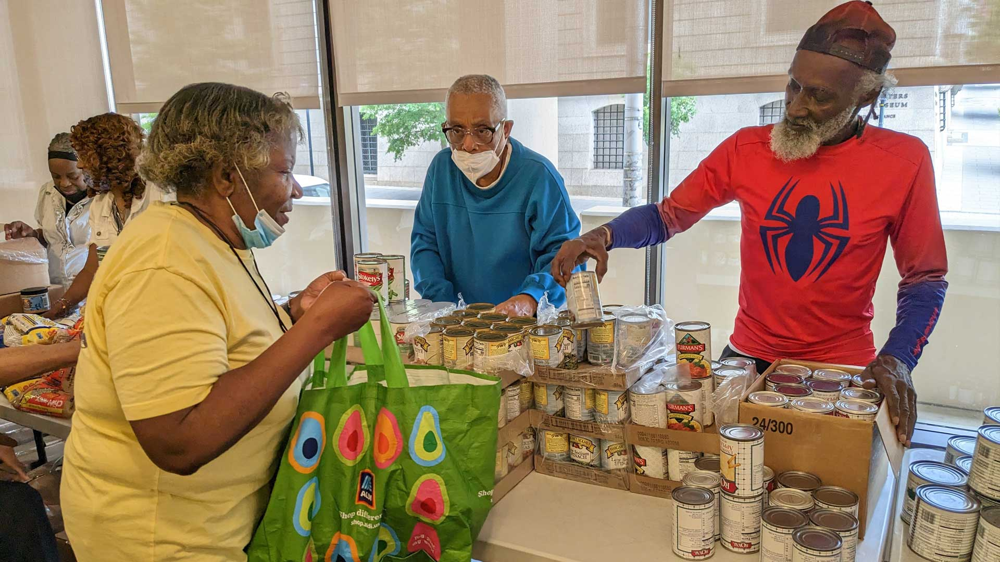

Get help from the assistant
Best if you would rather type or talk than fill in forms.
- Say it in your own words, such as "I don't have a car and I'm near Main Street."
- Get plain-language directions.
- No account needed to look around.
Tell us where you are and how you get around. We show pantries, mobile markets, and SNAP/EBT grocers that are open and reachable for you, whether you drive, ride the bus, or walk.

Near you, ranked for how you travelSample
Best if you would rather type or talk than fill in forms.
Best if you want a saved profile and to place pickup or delivery orders.
Already have an account? Sign in with your phone
Four steps from "where can I get food?" to a confirmed order.
Your location, how you travel, and any accessibility needs.
EBT-accepting stores ranked by how easy they are for you to reach.
Pick a pickup time, or request delivery if you are eligible.
Once the store confirms items are in stock, you get a bill to pay.
A store that is close on a map can be hours away without a car. We rank by realistic travel, and you can change your travel mode at any time.
Nearest stores by driving time.
Uses CTtransit routes and schedules.
Only stores within a comfortable walk.
Fewer transfers, shorter walks, and delivery when eligible.
When you sign up we ask for your EBT card number, age, a state ID photo, and a disability document if you need delivery. In this prototype nothing is verified or stored yet. Card and disability verification will be added in a future version.